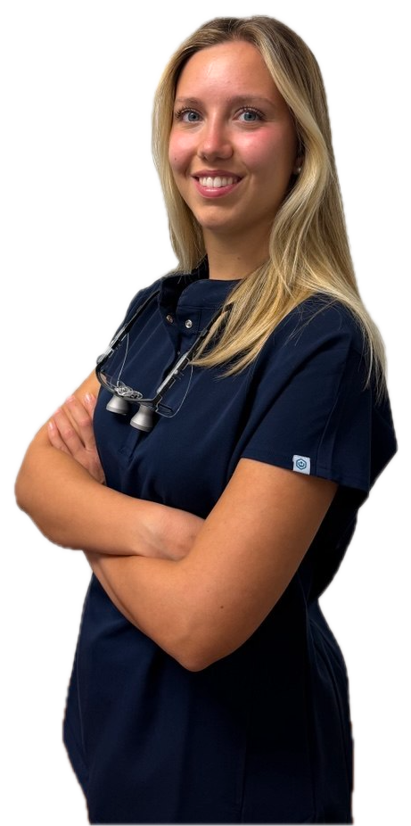
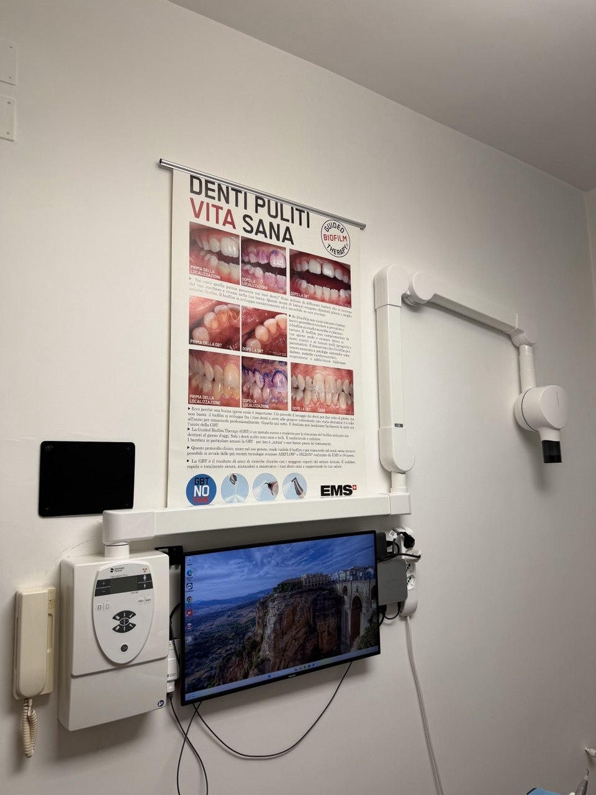
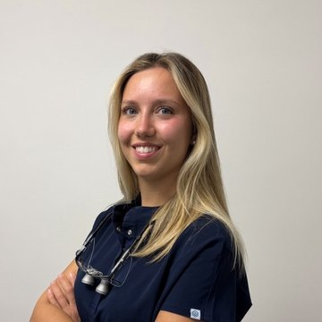

Un piano di cura preciso, spiegato prima di iniziare.
A Grottaglie: chirurgia orale e implantologia, parodontologia, ortodonzia Invisalign e cure per i bambini. Diagnosi in 3D con TC cone beam e scanner intraorale, preventivo scritto prima di ogni trattamento.
- Centro autorizzato Invisalign
- Due specialisti, un solo studio
- Laser a diodo e airflow
Orari
Lun, Mar, Mer e Ven 9:00–20:00
Sab 10:00–13:00
Telefono
339 109 2569 · 099 566 8098
Ti richiamiamo entro un giorno lavorativo
Dove siamo
Viale Ferruccio Parri, 6, Grottaglie (TA)
Indicazioni su Google Maps
Di cosa ci occupiamo
Dalla chirurgia alla prevenzione, sotto lo stesso tetto. Il percorso di cura si adatta a quello che serve, non il contrario.
-
Chirurgia e implantologia
Chirurgia orale, impianti post-estrattivi e a carico immediato, pianificati su TC 3D.
-
Protesi
Corone e ponti su denti naturali e su impianti, protesi rimovibile.
-
Parodontologia
Terapia parodontale non chirurgica, chirurgia parodontale ed estetica gengivale.
-
Conservativa ed endodonzia
Cura della carie e devitalizzazioni, anche con laser-terapia.
-
Sbiancamento dentale
Sbiancamento professionale per un sorriso più luminoso, in sicurezza per lo smalto.
-
Faccette estetiche
Faccette in ceramica o composito per correggere forma e colore dei denti anteriori.
-
Estetica del viso
Biorivitalizzazione del volto senza aghi.
-
Odontoiatria pediatrica
Pedodonzia, igiene e fluoroprofilassi per i più piccoli.
-
Ortodonzia
Apparecchi fissi, ortodonzia intercettiva e mascherine trasparenti Invisalign.
-
Gnatologia
Valutazione e trattamento dei disturbi dell'articolazione temporomandibolare.
La diagnosi viene sempre prima della cura
Con la stessa attenzione qualunque sia il trattamento, da una seduta di igiene a una riabilitazione completa.
- Diagnostica 3D
- TC cone beam e scanner intraorale: un quadro tridimensionale della bocca prima di ogni piano di cura, senza impronte in pasta.
- Strumentazione
- Laser a diodo e airflow con acqua calda, per una pulizia più confortevole anche in caso di denti sensibili.
- Piano condiviso
- Piano diagnostico-terapeutico costruito sulle esigenze del singolo paziente, con tempi e preventivo scritti prima di iniziare.
- Mantenimento
- Follow-up e richiami programmati, perché il risultato duri nel tempo.

Il percorso, passo dopo passo
Quattro fasi, con tempi comunicati fin dalla prima visita. Nessuna sorpresa a metà cura.
-
Visita e diagnosi
Esame clinico e, quando serve, approfondimento con TC cone beam o scanner intraorale.
-
Piano di cura
Un percorso costruito sulle tue esigenze, con preventivo scritto e condiviso prima di iniziare.
-
Trattamento
Svolto secondo il piano concordato, dalla singola seduta ai percorsi più articolati.
-
Follow-up
Controlli programmati per mantenere il risultato nel tempo.
Chi si occupa del tuo caso
Due professionisti con specializzazioni complementari, per coprire l'intero percorso di cura senza mandarti altrove.
-
Dr. Ciro Annicchiarico
Chirurgia orale e implantologia
- Protesi fissa e rimovibile
- Parodontologia chirurgica
- Ortodonzia adulto e bambino
- Ortodonzia fissa e intercettiva
- Gnatologia
-

Dr.ssa Alice Annicchiarico
Parodontologia e odontoiatria conservativa
- Terapia parodontale non chirurgica
- Pedodonzia
- Conservativa
- Endodonzia
- Biorivitalizzazione
Lo studio
Le stanze in cui lavoriamo ogni giorno. Tocca una foto per ingrandirla.
Domande frequenti
Se non trovi la risposta, chiamaci: rispondiamo volentieri anche prima della visita.
Cosa succede alla prima visita?
Un esame clinico completo e, quando serve, un approfondimento diagnostico con TC cone beam o scanner intraorale. Da lì costruiamo insieme il piano di cura più adatto.
Quanto dura un percorso di cura?
Dipende dal trattamento: i tempi di ogni fase te li indichiamo con chiarezza già dalla prima visita.
Fate ortodonzia con mascherine trasparenti?
Sì, siamo centro autorizzato Invisalign, oltre all'ortodonzia fissa e intercettiva per bambini e adulti.
Quali sono i costi?
Dipendono dal piano di cura concordato in visita: ricevi sempre un preventivo scritto e chiaro prima di iniziare.
Curate anche i bambini?
Sì. Ci occupiamo di pedodonzia, igiene, fluoroprofilassi e ortodonzia intercettiva, con tempi e modi adatti ai più piccoli.
Prenota una prima visita
Lasciaci nome e telefono: ti richiamiamo per fissare l'appuntamento, in genere entro un giorno lavorativo.
- Cellulare
- 339 109 2569
- Telefono fisso
- 099 566 8098
- Scrivi su WhatsApp
- @studiodentisticoannicchiarico
- Indirizzo
- Viale Ferruccio Parri, 6
74023 Grottaglie (TA)
Apri in Google Maps - Orari
- Lun, Mar, Mer e Ven 9:00–20:00
Sab 10:00–13:00